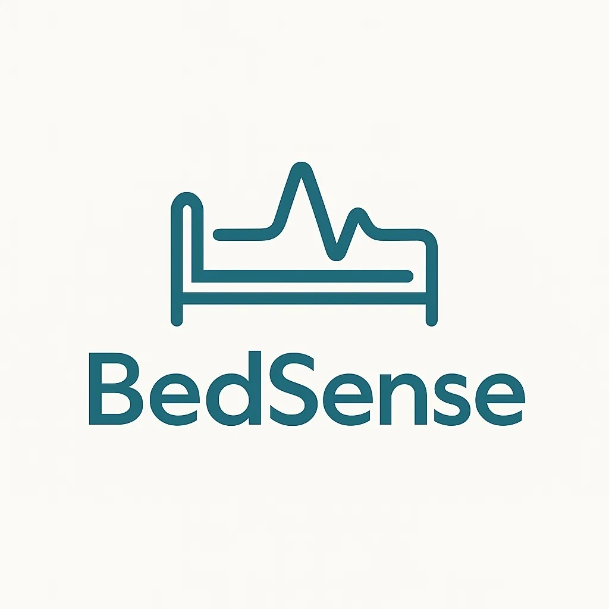

¿Qué es Bedsense?
Bedsense es un sistema inteligente para la gestión en tiempo real de camas hospitalarias. Ofrece a los administradores una visión clara y dinámica del estado de ocupación por área, permitiendo tomar decisiones rápidas, basadas en datos y mejorando la eficiencia operativa hospitalaria.
Características
Visualiza la disponibilidad de camas al instante, por cada área hospitalaria.
Interfaz moderna para facilitar decisiones rápidas y organizadas.
Almacenamiento en la nube con Google SQL y protocolos seguros.
Tecnologías Utilizadas
Lógica del sistema, procesamiento y automatización.
Base de datos robusta para mantener toda la información segura.
¿A quién va dirigido?
Bedsense está diseñado para equipos de gestión hospitalaria, personal médico y administrativos que necesitan tener control total sobre los recursos de hospitalización de manera eficiente, visual y centralizada.